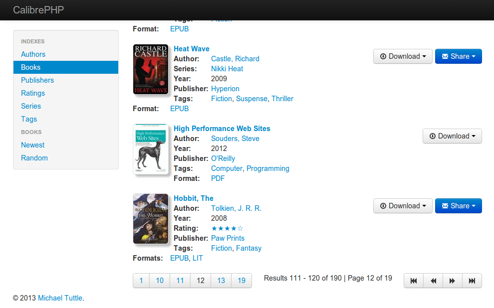
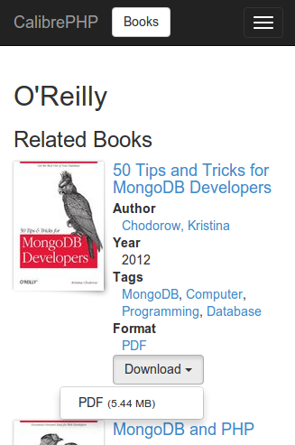
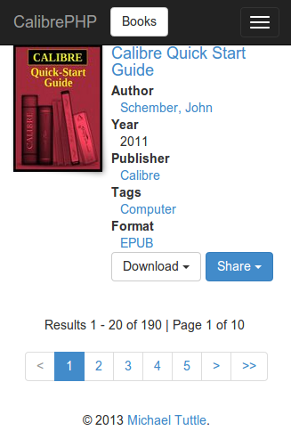

CalibrePHP
CalibrePHP provides a simple web interface to access a database created by the Calibre application. CalibrePHP was written using CakePHP.
Requirements
The master branch has the following requirements:
- HTTP Server. For example: Apache. mod_rewrite is preferred, but by no means required.
- PHP 5.3.0 or greater.
- PHP Sqlite 3 support.
- ImageMagick.
Installation
- Copy/Clone the repository to your webserver.
- Copy/Rename
app/Config/database.php.defaulttoapp/Config/database.php.- change
$default['database']to match the location of your calibre database.
- change
- Copy/Rename
app/Config/settings.php.defaulttoapp/Config/settings.php.- change
$config['Settings']['Default']['CalibrePath']to match the location of your calibre database.
- change
- Copy/Rename
app/Config/core.php.defaulttoapp/Config/core.php.- change
Security.saltfrom the default. - change
Security.cipherSeedfrom the default. - change
debugto the desired level.
- change
Screenshot
Mobile Screenshots
 Reporting issues
If you have an issues with CalibrePHP please open an issue on github https://github.com/openam/calibrephp/issues.
Contributing
If you'd like to contribute to CalibrePHP, review the Roadmap for planned features. You can fork the project add features and send pull requests, or open issues on github.